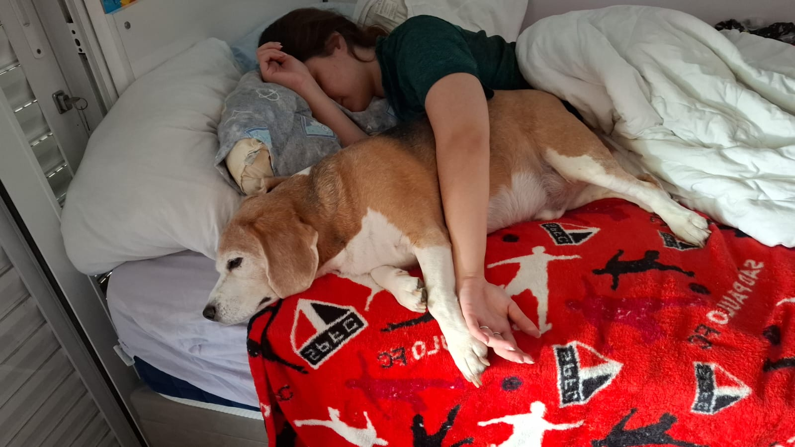

Preferências Visão Computacional
- Reconhecimento facial
- Detecção e rastreamento de objetos
Filmes, Vídeos e Imagens Preferidas

Algumas Fotos que gostaria publicar
Explicação de cada seção
No cabeçalho coloco uma foto minha, junto ao meu nome, imagem e um aúdio me apresentando.
Na esquerda está um vídeo meu me apresentando.
Nas prefêrencias gosto dessa parte da materia, pois acho interessante a ideia que a partir de uma imagem ser possível reconhecer seres humanos e identificar objetos, sendo possível em utilizar para diversas utilidas, como por exemplo melhorar a segurança identificando um assaltante.
Em filmes e vídeos, apresento meu cachorro porque ele fica comigo o dia inteiro no Home Office.
Na foto que gostaria de publicar, seria a foto de minha namorada com meu cachorro porque acho fofo.